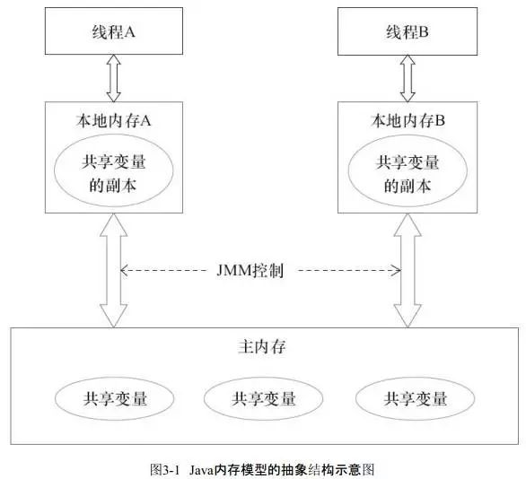
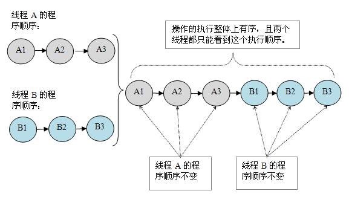

JMM是一种保证多线程通信中内存变量一致性的协议。定义了多线程之间通信和同步规则。
- 通信：不同线程对同一资源的并行访问
- 同步：不同线程对同一资源的顺序访问

硬件内存架构和JMM的基本模型
现代计算机硬件包括,多CPU,CPU寄存器,高速缓存,内存,磁盘等其数据读写如下图:

由于多CPU和多寄存机以及多高速缓存共享内存,会导致在处理数据时的一些问题：
- 缓存不一致,当多个cpu同时涉及运算一块住内存区域时,可能导致各自的缓存数据不一致。
- 指令重排序,为了充分发挥处理器内部的计算单元,处理器可能会对代码进行乱序执行的优化。处理器只保证该结果与顺序执行结果一致,并不能保证中间结果的顺序性。
从硬件角度看JMM中定义的堆和栈
java内存模型与硬件架构之间存在差异性,硬件架构没有区分线程和堆,全部位于主内存中,部分线程和堆有时可能会出现在CPU缓存中和CPU内部的寄存器中。
从抽象的角度看JMM定义线程和主内存之间的抽象关系
- 线程之间的共享变量位于主内存中
- 每个线程都有一个本地内存,用于存放该线程的本身信息和该线程以读/写共享变量的拷贝副本
- 为了获取更好的运行速度,虚拟机和硬件系统,可能会让工作内存优先存储于寄存器和高速缓存中。
- 线程工作内存是对CPU的寄存器和高速缓存的抽象描述,而JMM只是对内存的物理划分,只局限在JVM的内存。

JMM模型基本特性
线程通讯
线程的通讯方式一般由两种,共享内存和消息传递。java并发采用的是共享内存模型,java线程之稿件的通信总是隐式进行,整个通讯过程对程序员完全透明。
原子操作
根据工作内存和主内存交互协议,变量从主内存拷贝到工作内存与工作内存同步到主内存会经过下面八个原子操作。
| lock | 主存 | 作用于主内存的变量，它把一个变量标识为一条线程独占的状态。 |
|---|---|---|
| unlock | 主存 | 作用于主内存的变量，它把一个处于锁定状态的变量释放出来，释放后的变量才可以被其他线程锁定。 |
| read | 主存 | 作用于主内存的变量，它把一个变量的值从主内存传输到线程的工作内存中，以便随后的load动作使用。 |
| load | 工作内存 | 作用于工作内存的变量，它把read操作从主内存中得到的变量值放入工作内存的变量副本中 |
| use | 工作内存 | 作用于工作内存的变量，它把工作内存中一个变量的值传递给执行引擎，每当虚拟机遇到一个需要使用到变量的值的字节码指令时将会执行这个操作 |
| assign | 工作内存 | 作用于工作内存的变量，它把一个从执行引擎接收到的值赋给工作内存的变量，每当虚拟机遇到一个给变量赋值的字节码指令时执行这个操作。 |
| store | 工作内存 | 作用于工作内存的变量，它把工作内存中一个变量的值传送到主内存中，以便随后的write操作使用。 |
| write | 主内存 | 作用于主内存的变量，它把store操作从工作内存中得到的变量的值放入主内存的变量中。 |
1 | JMM规定如果要把一个变量从主内存复制到工作内存，那就要顺序地执行read和load操作，如果要把变量从工作内存同步回主内存，就要顺序地执行store和write操作。 |
指令重排序
现代程序和计算机架构为了优化执行效率,可能会对语句或指令进行重排序,主要有
- 编译器重排序
- 不改变单线程程序语意的前提下,重新安排语句的执行顺序。
- JMM编译器重排序规则会禁止特定的编译器重排序
- 处理器重排序
- 指令级并行重排序
- 将多条指令重叠排序,如果不存在数据依赖,处理器可以改变语句对应机器指令的执行顺序
- 内存系统重排序
- 处理器使用缓存和读写缓冲区，家族和存储操作看起来在乱序执行
- JMM的处理器重排序规则会要求JAVA编译器在生成指令序列时插入特定的内存屏障指令来禁止特定类型处理器重排序。
- 指令级并行重排序
volatile关键字就是java虚拟机提供的最轻量级的同步机制,当一个变量被定义成volatile之后此变量则对所有线程保持可见性,其实现原理是禁止指令重排序。
注意：volatile只是保证了变量对于所有线程的变化立即可见,但并非运算时原子操作,即volatile变量在多线程的并发运算操作也是不安全的。
三大特性(原子性,可见性,有序性)
java内存模型是围绕并发过程中如何处理原子性,可见性,和有序性来建立的。
原子性
java内存模型直接保存原子性的变量操作包括read、load、assign、use、store和write. 如果应用场景需要一个更大范围的原子性保证（经常会遇到），Java内存模型还提供了lock和unlock操作来满足这种需求，尽管虚拟机未把lock和unlock操作直接开放给用户使用，但是却提供了更高层次的字节码指令monitorenter和monitorexit来隐式地使用这两个操作，这两个字节码指令反映到Java代码中就是同步块——synchronized关键字，因此在synchronized块之间的操作也具备原子性。
可见性
当一个线程修改共享变量的值,其他线程能够立即可见最新值。 除了volatile之外，Java还有两个关键字能实现可见性，即synchronized和final。同步块的可见性是由“对一个变量执行unlock操作之前，必须先把此变量同步回主内存中（执行store、write操作）”这条规则获得的，而final关键字的可见性是指：被final修饰的字段在构造器中一旦初始化完成，并且构造器没有把“this”的引用传递出去（this引用逃逸是一件很危险的事情，其他线程有可能通过这个引用访问到“初始化了一半”的对象），那在其他线程中就能看见final字段的值。
有序性
Java程序中天然的有序性可以总结为一句话：如果在本线程内观察，所有的操作都是有序的；如果在一个线程中观察另一个线程，所有的操作都是无序的。前半句是指“线程内表现为串行的语义”（Within-Thread As-If-Serial Semantics），后半句是指“指令重排序”现象和“工作内存与主内存同步延迟”现象。 Java语言提供了volatile和synchronized两个关键字来保证线程之间操作的有序性，volatile关键字本身就包含了禁止指令重排序的语义，而synchronized则是由“一个变量在同一个时刻只允许一条线程对其进行lock操作”这条规则获得的，这条规则决定了持有同一个锁的两个同步块只能串行地进入。
先行先发原则
java语言中有一个先行先发原则(如果存在一个操作的执行结果需要对另一个操作可见,那么这两个操作之间必须要存在happens-before),根据这些操作原则我们可以很方便的从程序员角度去判断或解决并发环境下的冲突等问题。
- 程序次序规则：一个线程内，按照代码顺序，书写在前面的操作先行发生于书写在后面的操作
- 锁定规则：一个unLock操作先行发生于后面对同一个锁额lock操作
- volatile变量规则：对一个变量的写操作先行发生于后面对这个变量的读操作
- 传递规则：如果操作A先行发生于操作B，而操作B又先行发生于操作C，则可以得出操作A先行发生于操作C
- 线程启动规则：Thread对象的start()方法先行发生于此线程的每个一个动作
- 线程中断规则：对线程interrupt()方法的调用先行发生于被中断线程的代码检测到中断事件的发生
- 线程终结规则：线程中所有的操作都先行发生于线程的终止检测，我们可以通过Thread.join()方法结束、Thread.isAlive()的返回值手段检测到线程已经终止执行
- 对象终结规则：一个对象的初始化完成先行发生于他的finalize()方法的开始
顺序一致性模型
顺序一致性内存模型是一个被计算机科学家理想化了的理论参考模型,它为程序员提供了极强的内存可见性保证。顺序一致性内存模型有两大特性：
- 一个线程中的所有操作必须按照程序的顺序来执行。
- （不管程序是否同步）所有线程都只能看到一个单一的操作执行顺序。在顺序一致性内存模型中，每个操作都必须原子执行且立刻对所有线程可见。
对于同步后的多线程并发,顺序一致性模型保证A线程执行一定位于B线程之前。即A1->A2->A3

对于未同步的多线程并发,顺序一致性模型虽然整体上无序,但保证对于每个线程都是顺序的,即每个操作都能立即对任意线程可见。

一个正确同步的多线程程序。根据 JMM 规范，该程序的执行结果将与该程序在顺序一致性模型中的执行结果相同。
一个未同步的多线程程序。根据JMM中不但不保证整体的执行顺序是无序的,而且所有线程看到的操作执行顺序也可能不一样。比如，在当前线程把写过的数据缓存在本地内存中，且还没有刷新到主内存之前，这个写操作仅对当前线程可见；从其他线程的角度来观察，会认为这个写操作根本还没有被当前线程执行。只有当前线程把本地内存中写过的数据刷新到主内存之后，这个写操作才能对其他线程可见。在这种情况下，当前线程和其它线程看到的操作执行顺序将不一致。
总结
我们从现代计算机架构对并发编程的问题(缓存不一致,重排序)为起点,介绍了JMM对计算机架构的抽象,以及在这种架构方式对并发场景中的可见性和顺序性等保证。通过原子操作命令和内存屏障对可见性和顺序性的实现。通过as-if-serial和happens before 的JMM语义和原则给程序员视角提供了统一的可处理的并发编程模型。